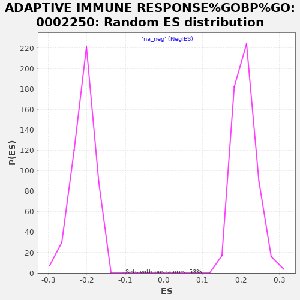

| | | Dataset | rankedList |
| Phenotype | NoPhenotypeAvailable |
| Upregulated in class | na_neg |
| GeneSet | ADAPTIVE IMMUNE RESPONSE%GOBP%GO:0002250 |
| Enrichment Score (ES) | -0.5629879 |
| Normalized Enrichment Score (NES) | -2.6870372 |
| Nominal p-value | 0.0 |
| FDR q-value | 0.0 |
| FWER p-Value | 0.0 |
Table: GSEA Results Summary
 Fig 1: Enrichment plot: ADAPTIVE IMMUNE RESPONSE%GOBP%GO:0002250
Fig 1: Enrichment plot: ADAPTIVE IMMUNE RESPONSE%GOBP%GO:0002250
Profile of the Running ES Score & Positions of GeneSet Members on the Rank Ordered List
| PROBE | GENE SYMBOL | GENE_TITLE | RANK IN GENE LIST | RANK METRIC SCORE | RUNNING ES | CORE ENRICHMENT | | 1 | MCOLN1 | | | 248 | 0.533 | -0.0038 | No |
| 2 | ARG1 | | | 329 | 0.475 | 0.0002 | No |
| 3 | MARCH8 | | | 368 | 0.449 | 0.0059 | No |
| 4 | TSTA3 | | | 384 | 0.435 | 0.0127 | No |
| 5 | C17orf99 | | | 592 | 0.337 | 0.0076 | No |
| 6 | HLA-DRB5 | | | 681 | 0.312 | 0.0084 | No |
| 7 | C4B | | | 732 | 0.300 | 0.0109 | No |
| 8 | ARG2 | | | 874 | 0.271 | 0.0082 | No |
| 9 | TFE3 | | | 960 | 0.258 | 0.0082 | No |
| 10 | CTSL | | | 1044 | 0.247 | 0.0081 | No |
| 11 | C1S | | | 1200 | 0.227 | 0.0038 | No |
| 12 | SERPING1 | | | 1464 | 0.203 | -0.0065 | No |
| 13 | EOMES | | | 1761 | 0.183 | -0.0189 | No |
| 14 | C8G | | | 2010 | 0.170 | -0.0291 | No |
| 15 | TSC1 | | | 2116 | 0.164 | -0.0317 | No |
| 16 | CD160 | | | 2196 | 0.161 | -0.0331 | No |
| 17 | CADM1 | | | 2223 | 0.159 | -0.0317 | No |
| 18 | JAM3 | | | 2244 | 0.158 | -0.0300 | No |
| 19 | TNFRSF21 | | | 2459 | 0.150 | -0.0387 | No |
| 20 | ATAD5 | | | 2511 | 0.148 | -0.0389 | No |
| 21 | NLRP10 | | | 2573 | 0.146 | -0.0395 | No |
| 22 | OTUD7B | | | 3060 | 0.130 | -0.0629 | No |
| 23 | MBL2 | | | 3086 | 0.129 | -0.0620 | No |
| 24 | C1QA | | | 3090 | 0.129 | -0.0599 | No |
| 25 | EBI3 | | | 3526 | 0.117 | -0.0808 | No |
| 26 | RELB | | | 3575 | 0.115 | -0.0814 | No |
| 27 | HRAS | | | 3678 | 0.113 | -0.0848 | No |
| 28 | C5 | | | 3879 | 0.108 | -0.0934 | No |
| 29 | BCL3 | | | 3910 | 0.108 | -0.0932 | No |
| 30 | C8B | | | 4102 | 0.103 | -0.1014 | No |
| 31 | TRPM4 | | | 4664 | 0.091 | -0.1294 | No |
| 32 | CD274 | | | 4707 | 0.090 | -0.1301 | No |
| 33 | IL12A | | | 4771 | 0.089 | -0.1319 | No |
| 34 | EXOSC6 | | | 4815 | 0.088 | -0.1326 | No |
| 35 | C1QB | | | 4841 | 0.087 | -0.1324 | No |
| 36 | EMP2 | | | 5147 | 0.081 | -0.1471 | No |
| 37 | SH2D1B | | | 5195 | 0.079 | -0.1482 | No |
| 38 | AICDA | | | 5281 | 0.077 | -0.1514 | No |
| 39 | ZP3 | | | 5603 | 0.071 | -0.1670 | No |
| 40 | LAG3 | | | 5632 | 0.070 | -0.1673 | No |
| 41 | IRF7 | | | 5868 | 0.066 | -0.1786 | No |
| 42 | TMEM98 | | | 5933 | 0.064 | -0.1808 | No |
| 43 | LIME1 | | | 6118 | 0.061 | -0.1895 | No |
| 44 | PRDM1 | | | 6159 | 0.060 | -0.1905 | No |
| 45 | AIRE | | | 6207 | 0.059 | -0.1920 | No |
| 46 | PRR7 | | | 6327 | 0.057 | -0.1973 | No |
| 47 | LILRB5 | | | 6378 | 0.056 | -0.1989 | No |
| 48 | STAT6 | | | 6406 | 0.055 | -0.1994 | No |
| 49 | LAMP3 | | | 6427 | 0.055 | -0.1995 | No |
| 50 | FCRL4 | | | 6674 | 0.051 | -0.2116 | No |
| 51 | MASP2 | | | 6720 | 0.050 | -0.2131 | No |
| 52 | TNFRSF13B | | | 6832 | 0.048 | -0.2181 | No |
| 53 | GZMM | | | 6927 | 0.046 | -0.2223 | No |
| 54 | EXO1 | | | 6984 | 0.045 | -0.2244 | No |
| 55 | IL12B | | | 6985 | 0.045 | -0.2237 | No |
| 56 | JAK2 | | | 7308 | 0.038 | -0.2400 | No |
| 57 | PDCD1 | | | 7460 | 0.036 | -0.2473 | No |
| 58 | CTSS | | | 7511 | 0.035 | -0.2494 | No |
| 59 | IL18R1 | | | 7549 | 0.034 | -0.2507 | No |
| 60 | C1R | | | 7577 | 0.033 | -0.2516 | No |
| 61 | LILRB3 | | | 7795 | 0.029 | -0.2625 | No |
| 62 | FCGR1B | | | 7915 | 0.027 | -0.2683 | No |
| 63 | SLC11A1 | | | 8063 | 0.024 | -0.2756 | No |
| 64 | LYN | | | 8170 | 0.023 | -0.2808 | No |
| 65 | HMHB1 | | | 8200 | 0.022 | -0.2820 | No |
| 66 | IFNG | | | 8236 | 0.021 | -0.2835 | No |
| 67 | PRF1 | | | 8389 | 0.018 | -0.2912 | No |
| 68 | TFEB | | | 8422 | 0.017 | -0.2925 | No |
| 69 | BATF | | | 8435 | 0.017 | -0.2929 | No |
| 70 | C4BPB | | | 8456 | 0.017 | -0.2936 | No |
| 71 | TNFRSF11A | | | 8457 | 0.017 | -0.2933 | No |
| 72 | C3 | | | 8692 | 0.012 | -0.3055 | No |
| 73 | CD46 | | | 8714 | 0.012 | -0.3064 | No |
| 74 | KDELR1 | | | 8867 | 0.009 | -0.3142 | No |
| 75 | MICA | | | 8910 | 0.008 | -0.3163 | No |
| 76 | MICB | | | 8918 | 0.008 | -0.3165 | No |
| 77 | PTK2B | | | 8922 | 0.008 | -0.3165 | No |
| 78 | PIK3CD | | | 8924 | 0.008 | -0.3164 | No |
| 79 | BCL10 | | | 8947 | 0.008 | -0.3175 | No |
| 80 | RNF8 | | | 9036 | 0.006 | -0.3220 | No |
| 81 | RORC | | | 9086 | 0.005 | -0.3245 | No |
| 82 | C1QBP | | | 9090 | 0.005 | -0.3245 | No |
| 83 | DENND1B | | | 9212 | 0.003 | -0.3309 | No |
| 84 | CR1 | | | 9264 | 0.002 | -0.3335 | No |
| 85 | GCNT3 | | | 9546 | -0.003 | -0.3483 | No |
| 86 | CD209 | | | 9607 | -0.005 | -0.3514 | No |
| 87 | RNF19B | | | 9608 | -0.005 | -0.3513 | No |
| 88 | ZNF683 | | | 9628 | -0.005 | -0.3522 | No |
| 89 | CD55 | | | 9637 | -0.005 | -0.3525 | No |
| 90 | HPRT1 | | | 9782 | -0.008 | -0.3600 | No |
| 91 | MCOLN2 | | | 9919 | -0.011 | -0.3670 | No |
| 92 | RAB27A | | | 9922 | -0.011 | -0.3669 | No |
| 93 | CLEC4M | | | 9971 | -0.012 | -0.3692 | No |
| 94 | PRKD2 | | | 10031 | -0.013 | -0.3721 | No |
| 95 | VTCN1 | | | 10068 | -0.013 | -0.3738 | No |
| 96 | BCL6 | | | 10169 | -0.015 | -0.3788 | No |
| 97 | CTSC | | | 10170 | -0.015 | -0.3785 | No |
| 98 | IGHE | | | 10241 | -0.017 | -0.3819 | No |
| 99 | SLAMF7 | | | 10458 | -0.021 | -0.3929 | No |
| 100 | ICAM1 | | | 10460 | -0.021 | -0.3926 | No |
| 101 | TAP1 | | | 10505 | -0.022 | -0.3946 | No |
| 102 | ERCC1 | | | 10518 | -0.022 | -0.3948 | No |
| 103 | UNC13D | | | 10534 | -0.023 | -0.3952 | No |
| 104 | FCAMR | | | 10592 | -0.024 | -0.3978 | No |
| 105 | CD70 | | | 10622 | -0.024 | -0.3989 | No |
| 106 | NFKB2 | | | 10631 | -0.024 | -0.3989 | No |
| 107 | GNL1 | | | 10659 | -0.025 | -0.3999 | No |
| 108 | CD247 | | | 10664 | -0.025 | -0.3997 | No |
| 109 | JAG1 | | | 10729 | -0.026 | -0.4026 | No |
| 110 | IGLL1 | | | 10776 | -0.027 | -0.4045 | No |
| 111 | CLU | | | 10818 | -0.028 | -0.4062 | No |
| 112 | LILRA1 | | | 10865 | -0.029 | -0.4081 | No |
| 113 | HLA-G | | | 10880 | -0.029 | -0.4084 | No |
| 114 | HLA-A | | | 10883 | -0.029 | -0.4080 | No |
| 115 | TNFRSF14 | | | 11083 | -0.034 | -0.4179 | No |
| 116 | NEDD4 | | | 11092 | -0.034 | -0.4177 | No |
| 117 | RORA | | | 11225 | -0.036 | -0.4240 | No |
| 118 | HLA-E | | | 11304 | -0.038 | -0.4275 | No |
| 119 | BTNL8 | | | 11419 | -0.041 | -0.4328 | No |
| 120 | SLA2 | | | 11449 | -0.041 | -0.4336 | No |
| 121 | BTN3A1 | | | 11507 | -0.042 | -0.4359 | No |
| 122 | PDCD1LG2 | | | 11752 | -0.047 | -0.4479 | No |
| 123 | LILRB2 | | | 11770 | -0.047 | -0.4480 | No |
| 124 | C2 | | | 11787 | -0.048 | -0.4480 | No |
| 125 | ORAI1 | | | 11805 | -0.048 | -0.4481 | No |
| 126 | CD8B | | | 11850 | -0.049 | -0.4496 | No |
| 127 | HLA-C | | | 11893 | -0.050 | -0.4509 | No |
| 128 | TLR8 | | | 12033 | -0.053 | -0.4573 | No |
| 129 | TNFRSF13C | | | 12053 | -0.054 | -0.4574 | No |
| 130 | HLA-B | | | 12086 | -0.054 | -0.4582 | No |
| 131 | LAT2 | | | 12154 | -0.056 | -0.4607 | No |
| 132 | SEMA4A | | | 12168 | -0.056 | -0.4604 | No |
| 133 | CD7 | | | 12244 | -0.058 | -0.4634 | No |
| 134 | FCER1G | | | 12247 | -0.058 | -0.4625 | No |
| 135 | OTUB1 | | | 12285 | -0.059 | -0.4634 | No |
| 136 | TAP2 | | | 12317 | -0.060 | -0.4640 | No |
| 137 | TRGV9 | | | 12420 | -0.063 | -0.4683 | No |
| 138 | JAK3 | | | 12572 | -0.066 | -0.4751 | No |
| 139 | CD81 | | | 12606 | -0.067 | -0.4757 | No |
| 140 | C1QC | | | 12617 | -0.067 | -0.4750 | No |
| 141 | CSK | | | 12681 | -0.068 | -0.4772 | No |
| 142 | FBXO38 | | | 12686 | -0.068 | -0.4762 | No |
| 143 | SIGLEC10 | | | 12708 | -0.069 | -0.4761 | No |
| 144 | PRKCD | | | 12769 | -0.070 | -0.4781 | No |
| 145 | FOXP3 | | | 12967 | -0.075 | -0.4872 | No |
| 146 | TCIRG1 | | | 13049 | -0.077 | -0.4901 | No |
| 147 | C4BPA | | | 13147 | -0.079 | -0.4939 | No |
| 148 | SH2D1A | | | 13275 | -0.082 | -0.4991 | No |
| 149 | RNF125 | | | 13278 | -0.082 | -0.4978 | No |
| 150 | HLA-DQB1 | | | 13317 | -0.083 | -0.4984 | No |
| 151 | INPP5D | | | 13347 | -0.084 | -0.4985 | No |
| 152 | FYN | | | 13405 | -0.085 | -0.5000 | No |
| 153 | CD244 | | | 13604 | -0.090 | -0.5089 | No |
| 154 | SUSD4 | | | 13621 | -0.090 | -0.5082 | No |
| 155 | TLR4 | | | 13646 | -0.091 | -0.5079 | No |
| 156 | C1RL | | | 13682 | -0.092 | -0.5081 | No |
| 157 | SPN | | | 14045 | -0.100 | -0.5255 | No |
| 158 | CLEC10A | | | 14059 | -0.100 | -0.5244 | No |
| 159 | UNC93B1 | | | 14114 | -0.101 | -0.5255 | No |
| 160 | ZAP70 | | | 14131 | -0.102 | -0.5246 | No |
| 161 | BTN3A2 | | | 14295 | -0.106 | -0.5313 | No |
| 162 | POU2F2 | | | 14391 | -0.108 | -0.5345 | No |
| 163 | IGHV7-81 | | | 14560 | -0.113 | -0.5414 | No |
| 164 | IL18BP | | | 14664 | -0.115 | -0.5448 | No |
| 165 | UNG | | | 14777 | -0.118 | -0.5487 | No |
| 166 | LILRB4 | | | 14865 | -0.120 | -0.5512 | No |
| 167 | MYO1G | | | 14899 | -0.121 | -0.5508 | No |
| 168 | ERAP2 | | | 14938 | -0.122 | -0.5507 | No |
| 169 | STAT3 | | | 14963 | -0.123 | -0.5499 | No |
| 170 | NBN | | | 15037 | -0.125 | -0.5516 | No |
| 171 | IL18 | | | 15059 | -0.125 | -0.5505 | No |
| 172 | CLEC4A | | | 15122 | -0.127 | -0.5516 | No |
| 173 | HAVCR2 | | | 15149 | -0.128 | -0.5507 | No |
| 174 | PRKCB | | | 15163 | -0.128 | -0.5492 | No |
| 175 | RNF168 | | | 15383 | -0.134 | -0.5584 | No |
| 176 | PIK3CG | | | 15408 | -0.134 | -0.5574 | No |
| 177 | PAG1 | | | 15492 | -0.136 | -0.5594 | No |
| 178 | LAX1 | | | 15558 | -0.138 | -0.5604 | Yes |
| 179 | RIPK2 | | | 15577 | -0.139 | -0.5590 | Yes |
| 180 | LILRB1 | | | 15630 | -0.141 | -0.5593 | Yes |
| 181 | TRGV4 | | | 15676 | -0.142 | -0.5592 | Yes |
| 182 | LAIR1 | | | 15692 | -0.142 | -0.5575 | Yes |
| 183 | CD8A | | | 15741 | -0.144 | -0.5575 | Yes |
| 184 | SLAMF6 | | | 15782 | -0.145 | -0.5571 | Yes |
| 185 | ADAM17 | | | 15794 | -0.145 | -0.5552 | Yes |
| 186 | LAT | | | 15878 | -0.148 | -0.5570 | Yes |
| 187 | IGLV7-46 | | | 15900 | -0.148 | -0.5556 | Yes |
| 188 | LILRA3 | | | 15954 | -0.150 | -0.5558 | Yes |
| 189 | APCS | | | 16012 | -0.151 | -0.5561 | Yes |
| 190 | SLAMF1 | | | 16045 | -0.152 | -0.5552 | Yes |
| 191 | CRTAM | | | 16055 | -0.152 | -0.5530 | Yes |
| 192 | BTN3A3 | | | 16074 | -0.153 | -0.5513 | Yes |
| 193 | CD3E | | | 16111 | -0.154 | -0.5506 | Yes |
| 194 | CD84 | | | 16130 | -0.155 | -0.5488 | Yes |
| 195 | IGHV1OR15-9 | | | 16132 | -0.155 | -0.5462 | Yes |
| 196 | HLA-DQB2 | | | 16237 | -0.159 | -0.5489 | Yes |
| 197 | HMGB1 | | | 16323 | -0.161 | -0.5506 | Yes |
| 198 | DBNL | | | 16385 | -0.164 | -0.5510 | Yes |
| 199 | ICOSLG | | | 16463 | -0.166 | -0.5522 | Yes |
| 200 | DLG1 | | | 16504 | -0.168 | -0.5514 | Yes |
| 201 | CD40LG | | | 16523 | -0.168 | -0.5494 | Yes |
| 202 | ALCAM | | | 16584 | -0.170 | -0.5496 | Yes |
| 203 | LIG4 | | | 16738 | -0.176 | -0.5546 | Yes |
| 204 | FGL2 | | | 16762 | -0.177 | -0.5528 | Yes |
| 205 | MSH2 | | | 16769 | -0.177 | -0.5500 | Yes |
| 206 | DCLRE1C | | | 16979 | -0.185 | -0.5578 | Yes |
| 207 | ANXA1 | | | 17003 | -0.186 | -0.5558 | Yes |
| 208 | ERAP1 | | | 17053 | -0.188 | -0.5552 | Yes |
| 209 | LY9 | | | 17164 | -0.193 | -0.5576 | Yes |
| 210 | SYK | | | 17238 | -0.196 | -0.5581 | Yes |
| 211 | CD1A | | | 17332 | -0.200 | -0.5595 | Yes |
| 212 | HLA-DRB1 | | | 17367 | -0.201 | -0.5578 | Yes |
| 213 | BTK | | | 17428 | -0.204 | -0.5575 | Yes |
| 214 | MTOR | | | 17471 | -0.205 | -0.5561 | Yes |
| 215 | HLA-DRB3 | | | 17532 | -0.208 | -0.5557 | Yes |
| 216 | FCGR2B | | | 17583 | -0.210 | -0.5547 | Yes |
| 217 | SKAP1 | | | 17695 | -0.215 | -0.5568 | Yes |
| 218 | EIF2AK4 | | | 17731 | -0.217 | -0.5549 | Yes |
| 219 | KLHL6 | | | 17772 | -0.219 | -0.5532 | Yes |
| 220 | IGKV5-2 | | | 17792 | -0.220 | -0.5504 | Yes |
| 221 | CD6 | | | 17839 | -0.222 | -0.5490 | Yes |
| 222 | GATA3 | | | 17914 | -0.226 | -0.5490 | Yes |
| 223 | TRAF6 | | | 17969 | -0.229 | -0.5478 | Yes |
| 224 | CD3G | | | 17992 | -0.231 | -0.5450 | Yes |
| 225 | MLH1 | | | 18026 | -0.233 | -0.5427 | Yes |
| 226 | SIT1 | | | 18210 | -0.247 | -0.5481 | Yes |
| 227 | CTLA4 | | | 18219 | -0.248 | -0.5442 | Yes |
| 228 | MSH6 | | | 18249 | -0.249 | -0.5414 | Yes |
| 229 | CD86 | | | 18252 | -0.250 | -0.5372 | Yes |
| 230 | HSPD1 | | | 18293 | -0.253 | -0.5349 | Yes |
| 231 | THEMIS | | | 18311 | -0.253 | -0.5314 | Yes |
| 232 | CD4 | | | 18318 | -0.254 | -0.5274 | Yes |
| 233 | CTSH | | | 18349 | -0.257 | -0.5245 | Yes |
| 234 | TEC | | | 18372 | -0.259 | -0.5212 | Yes |
| 235 | CD3D | | | 18394 | -0.260 | -0.5178 | Yes |
| 236 | EXOSC3 | | | 18423 | -0.263 | -0.5147 | Yes |
| 237 | IL4R | | | 18438 | -0.265 | -0.5109 | Yes |
| 238 | GAPT | | | 18474 | -0.269 | -0.5080 | Yes |
| 239 | RFTN1 | | | 18574 | -0.278 | -0.5085 | Yes |
| 240 | TRAT1 | | | 18651 | -0.287 | -0.5075 | Yes |
| 241 | CD1E | | | 18775 | -0.303 | -0.5087 | Yes |
| 242 | CD74 | | | 18785 | -0.304 | -0.5039 | Yes |
| 243 | ITK | | | 18795 | -0.306 | -0.4991 | Yes |
| 244 | CCR6 | | | 18812 | -0.309 | -0.4946 | Yes |
| 245 | IGLV9-49 | | | 18814 | -0.309 | -0.4893 | Yes |
| 246 | TXK | | | 18819 | -0.310 | -0.4842 | Yes |
| 247 | CLEC4C | | | 18821 | -0.310 | -0.4788 | Yes |
| 248 | IGKV1D-8 | | | 18888 | -0.325 | -0.4767 | Yes |
| 249 | CD19 | | | 18902 | -0.328 | -0.4717 | Yes |
| 250 | CR2 | | | 18967 | -0.344 | -0.4691 | Yes |
| 251 | GPR183 | | | 18997 | -0.353 | -0.4645 | Yes |
| 252 | IL18RAP | | | 19030 | -0.365 | -0.4599 | Yes |
| 253 | CLEC4D | | | 19054 | -0.376 | -0.4546 | Yes |
| 254 | IRF4 | | | 19061 | -0.379 | -0.4483 | Yes |
| 255 | HLA-DPB1 | | | 19105 | -0.407 | -0.4435 | Yes |
| 256 | CAMK4 | | | 19106 | -0.408 | -0.4365 | Yes |
| 257 | CD27 | | | 19114 | -0.413 | -0.4297 | Yes |
| 258 | HLA-DPA1 | | | 19120 | -0.419 | -0.4227 | Yes |
| 259 | HLA-DRA | | | 19125 | -0.421 | -0.4156 | Yes |
| 260 | SWAP70 | | | 19133 | -0.429 | -0.4086 | Yes |
| 261 | HLA-DMA | | | 19138 | -0.434 | -0.4013 | Yes |
| 262 | HLA-DQA2 | | | 19146 | -0.441 | -0.3940 | Yes |
| 263 | MEF2C | | | 19147 | -0.441 | -0.3864 | Yes |
| 264 | HLA-DQA1 | | | 19154 | -0.450 | -0.3789 | Yes |
| 265 | LEF1 | | | 19162 | -0.463 | -0.3712 | Yes |
| 266 | HLA-DMB | | | 19183 | -0.543 | -0.3629 | Yes |
| 267 | CD1C | | | 19189 | -0.571 | -0.3533 | Yes |
| 268 | IGKV1D-42 | | | 19190 | -0.580 | -0.3432 | Yes |
| 269 | CLEC6A | | | 19193 | -0.595 | -0.3330 | Yes |
| 270 | IGHV3OR16-8 | | | 19198 | -0.635 | -0.3222 | Yes |
| 271 | IGKV2D-24 | | | 19200 | -0.638 | -0.3112 | Yes |
| 272 | BTLA | | | 19206 | -0.680 | -0.2997 | Yes |
| 273 | CD79B | | | 19210 | -0.700 | -0.2878 | Yes |
| 274 | HLA-DOA | | | 19212 | -0.721 | -0.2753 | Yes |
| 275 | BACH2 | | | 19218 | -0.772 | -0.2622 | Yes |
| 276 | IGKV2D-28 | | | 19222 | -0.847 | -0.2477 | Yes |
| 277 | IGHV1OR15-1 | | | 19228 | -0.951 | -0.2315 | Yes |
| 278 | IGHV3-35 | | | 19231 | -0.970 | -0.2148 | Yes |
| 279 | HLA-DOB | | | 19234 | -1.038 | -0.1969 | Yes |
| 280 | IGKV3D-20 | | | 19236 | -1.074 | -0.1784 | Yes |
| 281 | IGHV3-73 | | | 19237 | -1.114 | -0.1591 | Yes |
| 282 | IGKV3D-11 | | | 19241 | -1.264 | -0.1373 | Yes |
| 283 | IGKV2D-26 | | | 19244 | -1.345 | -0.1142 | Yes |
| 284 | IGHV3-74 | | | 19245 | -1.345 | -0.0909 | Yes |
| 285 | IGKV1D-43 | | | 19249 | -1.488 | -0.0653 | Yes |
| 286 | IGHV3-43 | | | 19253 | -1.725 | -0.0356 | Yes |
| 287 | CD79A | | | 19257 | -2.065 | 0.0001 | Yes |
Table: GSEA details [plain text format]

Fig 2: ADAPTIVE IMMUNE RESPONSE%GOBP%GO:0002250: Random ES distribution
Gene set null distribution of ES for ADAPTIVE IMMUNE RESPONSE%GOBP%GO:0002250